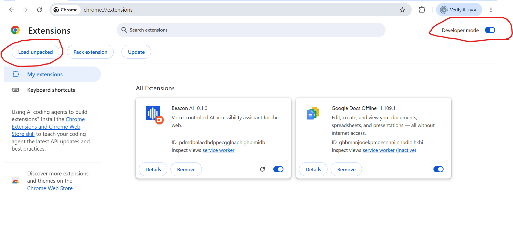
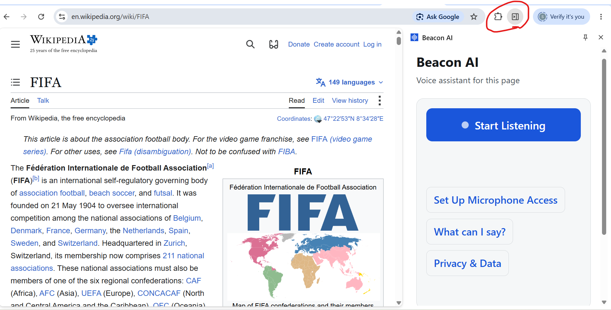
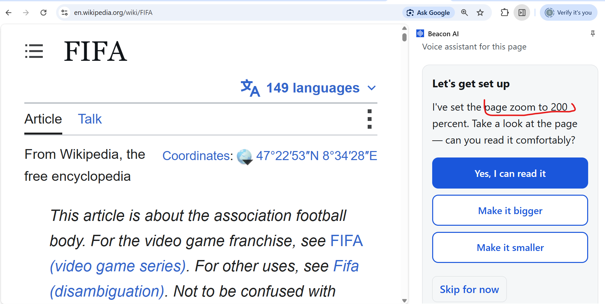
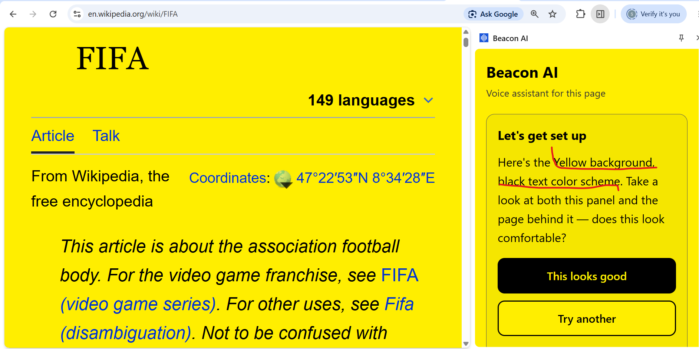
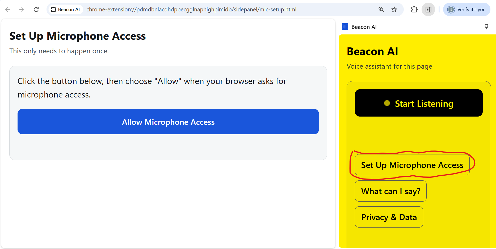

A voice guide to the web — User Guide
Beacon AI is a voice assistant that helps you understand, navigate, and read any webpage out loud — built with and for blind and low-vision people. This guide walks through getting set up and everything you can say to it.
You don't need to already be an expert with screen readers or assistive technology to use Beacon AI. It's built to work comfortably whether this is the first accessibility tool you've ever used, or you've used others for years.
Everything in Beacon AI is adjustable — how fast it speaks, how large the page appears, and what colors it uses — and you can change any of it at any time, not just when you're first setting up. Vision needs change over time, and Beacon AI is built to change with you.
Installing Beacon AI involves a few technical steps in Chrome's settings. If you have a sighted friend, family member, or someone from your assistive technology center nearby, it's completely fine to ask for a hand with this one-time setup — everything after this is entirely voice-driven.

Once installed, click the Beacon AI icon in Chrome's toolbar. It opens as a panel on the side of your browser window, and stays there as you browse.

The very first time you open Beacon AI, it walks you through a short setup — about a minute — to get things comfortable for you specifically. Nothing here is permanent; you can redo this setup any time by saying "redo setup."
Beacon AI plays a sample sentence and asks if the speed feels right. Say or click "faster" or "slower" as many times as you like until it sounds comfortable.
Beacon AI zooms the actual page you're looking at — not just a description — and asks if you can read it comfortably. Keep adjusting until it's right.

Beacon AI shows you a few color combinations — for example, a black background with white text, or a yellow background with black text — live, on both the panel and the page itself. Pick whichever is easiest on your eyes.

Whatever you choose follows you to every page you read afterward, automatically.
Beacon AI listens only when you tell it to — it is never listening in the background. This is deliberate: it means nothing you say gets picked up by accident.
This is a one-time Chrome quirk, not a problem with Beacon AI. If it happens:

You never need to memorize this list — say "help" or click "What can I say?" in the panel any time, and Beacon AI will remind you, grouped into short categories rather than one long list.
"zoom in," "zoom out," or "zoom to a percent" • "scroll up," "scroll down," "scroll to the top," "scroll to the bottom" • "go back" or "go forward"
"read this page" • "summarize this page" • "give me the key points" • "simplify this" • "define" a word, like "define osmosis" • "translate this to" a language, like "translate this to Spanish" • or simply ask any question about what's on the page
"search for" a topic, like "search for diabetes" • "list results" to hear what came up, as a numbered list • "open the first one," "open result two," or "choose the third one" to go straight to it
"speak faster" or "speak slower" • "continue reading" • "dark theme," "yellow background," or "yellow on black" • "redo setup" to recalibrate everything • "privacy" to hear what happens with your information
You can hear this any time by saying "privacy" — here it is in full, so you have it in writing too.
Here's what happens with your information, plainly.
When you speak, your voice goes to Google's speech recognition service to turn it into text — Beacon AI does not record or store your voice.
When you ask about a page, that page's visible text is sent to Anthropic's Claude AI service to generate a response — never anything you type into forms, passwords, or private fields, only what's readable on the page.
Your personal preferences — speech speed, zoom level, and color theme — are stored only on this device.
Beacon AI itself does not keep a permanent record of what you've asked or read.
Everything about Beacon AI is meant to be adjustable, forgiving, and yours to shape — not something you have to adapt yourself to. If something isn't comfortable, there is almost always a way to change it: a different color, a different pace, a redo of setup, or simply asking a question a different way.
If you're unsure what to do at any point, saying "help" is always a safe place to start.